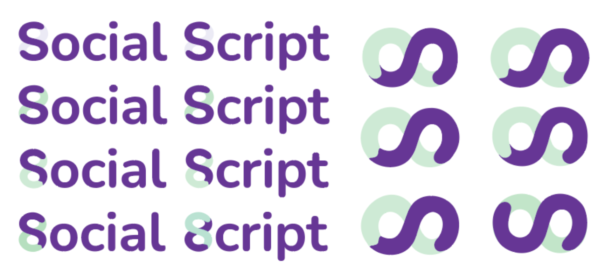

Social Script
SocialScript est un simulateur interactif d'entraînement aux situations sociales, développé dans le cadre d'un workshop HTML/CSS/JavaScript de ma formation Developper Javascript Fullstack à Interface3. Le projet répond à un besoin d'apprentissage explicite des codes sociaux dans un environnement sécurisé, particulièrement utile pour les personnes neurodivergentes.

Objectif du projet
Ce projet vient d'un besoin que j'ai rencontré personellement. Étant autiste et TDAH, c'est par la répétition et l'analyse consciente des interactions que j'ai acquis des compétences sociales qui ne me venaient pas naturellement (Merci les SIMS !). J'ai toujours rêvé d'un environnement où m'entraîner sans craindre les malentendus ou les faux pas du temps réel. Ce projet est cette réalisation : un simulateur où les personnes neurodivergentes peuvent expérimenter, analyser et progresser dans un cadre structuré et bienveillant.
Fonctionnalités clés :
- Affichage dynamique : Gestion des scénarios via JavaScript et un JSON server.
- Génération d'avatars : Utilisation de Dicebear API pour générer des interlocuteur..ices uniques.
- Feedback pédagogique : Explication détaillée des codes implicites et possibilité de rejouer pour explorer toutes les issues possibles.
- Ressources : Pages comprennant diversers ressources facilement accessible grace au champ de recherches et label
Design
Mes recherches graphiques ont abouti à un design qui reprend le logo de l'autisme (un sigle infini) en l'intégrant au S de Socal et de Script. Cette fusion symbolise une boucle d'apprentissage continue et fluide tout en respectant les normes WCAG AAA voulue sur le site.
Défis techniques : L'Accessibilité
Pour un projet s'adressant aux personnes neurodivergentes, l'accessibilité n'est pas une option, mais le socle de l'expérience utilisateur. Mon défi a été de réduire la charge cognitive tout en assurant une navigation robuste pour les technologies d'assistance.
1. Navigation sémantique native
J'ai privilégié l'utilisation des balises HTML5 <details> et
<summary> pour les FAQ et les sections d'analyse.
L'intérêt technique : Ces balises offrent une interactivité native sans JavaScript. Elles sont accessibles par défaut : le navigateur gère lui-même le focus clavier et communique automatiquement l'état (ouvert ou fermé) aux lecteurs d'écran.
<details>
<summary>Titre de la FAQ</summary>
<p>Contenu accessible par défaut.</p>
</details>
2. Gestion proactive du Focus
Dans une application dynamique où le contenu est généré par JavaScript, comme dans ma page scenario, le curseur clavier se perd souvent lors d'un rafraîchissement. J'ai implémenté un système de Focus Management.
const nextBtn = document.querySelector('.option-btn');
nextBtn.focus({ focusVisible: true });
Ce que j'ai appris
Ce projet m'a permis de transformer mes engagements en faveur de l'inclusion en compétences techniques. En m'appuyant sur les standards du W3C et les principes POUR, j'ai consolidé ma pratique de l'accessibilité native.
Maîtrise des standards et outils
J'ai approfondi l'usage du duo <details>/<summary> et la gestion proactive
du focus clavier en JavaScript. L'utilisation systématique de **Wave** et des **axe DevTools** fait
désormais partie intégrante de mon workflow pour garantir des interfaces certifiées WCAG
AA.
Analyse critique du workflow
Si JSON Server a été un excellent choix pour mon premier projet avec une API, il a montré ses limites pour le déploiement en production.
Le test ultime : Naviguer sur mon propre simulateur via VoiceOver a été l'étape la plus formatrice. Cela m'a permis d'ajuster l'annonce des feedbacks pédagogiques pour qu'ils soient aussi fluides à l'oreille qu'à l'œil.